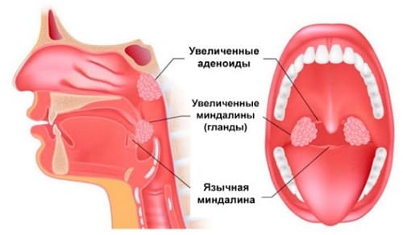

Роль миндалин и аденоидов долгое время была предметов обсуждений. Так как они являются тканями лимфатической системы, которая вырабатывает борющиеся с инфекциями клетки и усиливающие иммунитет вещества, и расположены вокруг горла и дыхательных путей — мест, где большинство возбудителей попадают в организм, то врачи подозревают, что миндалины и аденоиды действительно помогают ребенку бороться с бактериями; и их можно удалять, но только если они причиняют вред здоровью ребенка. Миндалины представляют собой образования, расположенные по обеим сторонам горла. Вы можете их увидеть, когда ваш ребенок широко раскрывает рот. Аденоиды расположены над миндалинами позади нёбного язычка (кусочек ткани, который свисает вниз с задней части нёба). Их обычно можно видеть только с помощью специальной подсветки. Поскольку аденоиды расположены в задней части носовых ходов, когда они увеличиваются, ребенку тяжело дышать через нос. Когда увеличиваются миндалины, ребенку тяжело глотать. Как правило, и миндалины и аденоиды увеличиваются во время инфекции.
СОВЕТ ДОКТОРОВ СИРС: ОСМОТРИТЕ МИНДАЛИНЫ СВОЕГО РЕБЕНКА Привыкните к нормальному размеру миндалин своего ребенка. Попросите его посмотреть вверх на потолок, широко открыть рот и сказать или пропеть «а-а-а» или «э-э-э» и протянуть этот звук по меньшей мере в течение 5 секунд, пока вы смотрите. |
Миндалины и аденоиды могут расти примерно до 5-летнего возраста, а затем они постепенно уменьшаются. Самых больших размеров они достигают и больше всего беспокойства доставляют в дошкольном возрасте, когда ребенок склонен к инфекциям верхних дыхательных путей.

СОВЕТ ДОКТОРОВ СИРС: БЕСПОКОЙНЫЙ СОН - УДАЛИТЕ ИХ! Если ваш ребенок страдает синдромом обструктивного апноэ сна (СОАС), миндалины и/или аденоиды должны быть удалены. |
НАДО ЛИ УДАЛЯТЬ МИНДАЛИНЫ И АДЕНОИДЫ?
Тремя главными критериями, которые используются для определения, надо ли удалять вашему ребенку миндалины или аденоиды или можно подождать и понаблюдать, является то, насколько эти ткани нарушают его:
Как родители могут помочь в принятии решения. Вот где ведение родителями дневника может действительно помочь. Записывайте следующую информацию:
Читая ваш дневник, ЛОР-врач постарается сделать два вывода: насколько сильно эти ткани беспокоят вашего ребенка и становится ли ситуация лучше, хуже или не меняется?
Здоровье ребенка от докторов Сирс / Сирс У. и др.